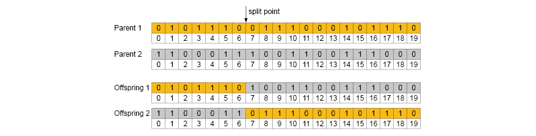
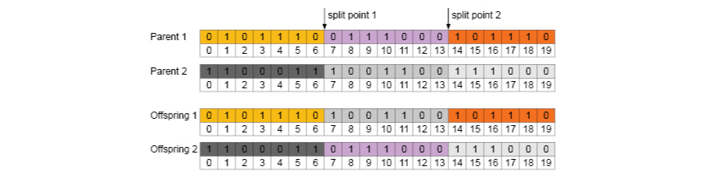

Crossover
Once the natural selection is completed and the individuals are selected, the next genetic operator, is the crossover. In this step, the algorithm imitate the natural sexual reproduction to create offsprings to inherence parents properties and characteristics. The crossover imitates the DNA recombination of parents in the sexual reproduction.
Crossover operates between generations and it is used in the 90% of selected individuals. All crossover methods operate in two different ways. The first method is called destructive strategy and consist that the offspring replace the parents. The non-destructive method check if the offspring has a higher fitness value than parents. If is false the offspring is rejected and will not replace the parents, otherwise yes.
The idea behind the crossover operator is the inheritance. If the parents have a high fitness, It's expect an offspring with a high fitness too. Both parents share the chromosomes to the offspring.
There are many types of the crossover operators. These are the most used:
Single Point Crossover
The single point crossover takes two individuals. Then, split each chromosome in two parts and interchange the genes to create two new chromosomes. The split point can be generated randomly or at specific point.

Two Points Crossover
This method is very similar to the single point crossover. Nevertheless, in this case the chromosomes is divided in three parts.

Uniform Crossover
In the uniform crossover the offspring genes have the same probabilities to come from one parent or the other. This technique implies to generate a random binary list (1, 0, 1, 1, 0, 1, 0, 0, 1) to test if the gene will be inhered from the parent 1 or 2. In order to generate the second offspring the rule is inverted.
In the case of complex chromosomes, i.e. composed by a mix of integers and real numbers, it's possible to define other types of crossover algorithms. Combinatorial problems, can be complex in order to avoid duplicate genes. The crossover genetic operator is essential in the GA implementation because is in charge to explore very fast in the search space. Also, this operator is responsible of the properties of the GA and determine the implications of the evolution population.